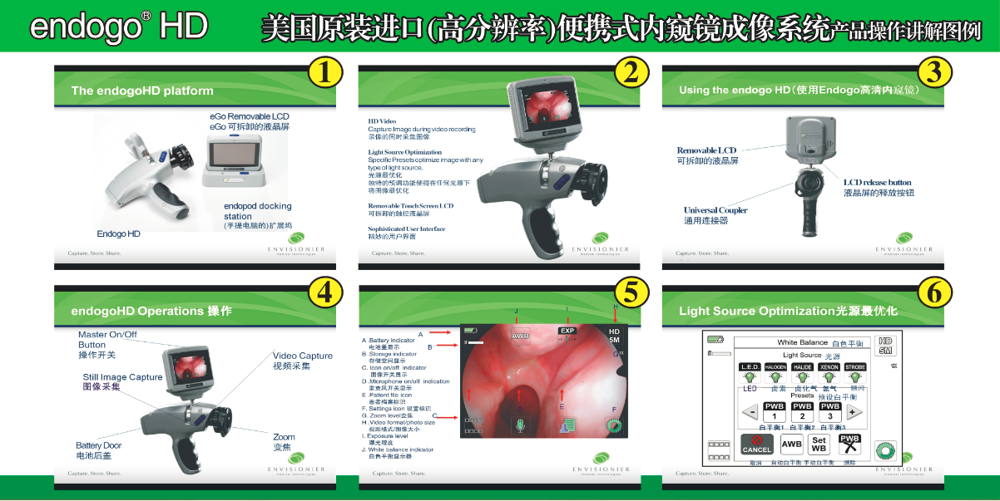
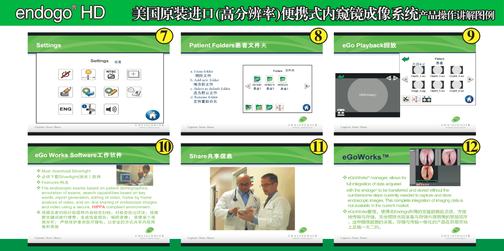

endogo® HD（高分辨率）便携式内窥镜成像系统说明书 endogo® HD（高分辨率）便携式内窥镜成像系统是下一代 endogo®：世界上第一款掌上型便携式内窥镜成像系统。endogo®和 endogo® HD是革命性的装置，它以一种新颖集成的方式将数据采集与储存和管理融合在一起。endogo® HD是我们三年多研发的成果，它承载着我们为提供多年舒心无忧服务的希望。 endogo® HD是基于一种简单原则设置的独特装置，就是易用。endogo® HD背后的故事亦如其本身一般独 特。endogo® HD是由外科医生和内窥镜医生共同创意的。正如您一样的内窥镜医生：渴望将消费电子产品 的易用性和功能性引入数字内窥镜领域的专业人士。endogo® HD的功能非常精巧实用，同时其独特设计也能够满足您美学和人机工程学方面的需要。 endogo® HD是一种“即插即用”装置。您会发现，无论您身处环境如何：无论是运动、半静止状态还是静止环境，都可以使用 endogo® HD。尽管在某些情况下通过 9 cm（3.5"）LCD 触摸屏观察也许觉得还可 以，但是您也许渴望有一个大一些的观察环境。有了 endogo® HD的 HDMI 和 AV 输出，您可以使用任何兼容的计算机、电视或 LCD/计算机监视器进行观察（参见下面的警告和注意）。 适应症 endogo® HD便携式内窥镜成像系统是一种集成高清摄像机和多媒体存档系统，可以与刚性或柔性内窥镜配合使用进行视频内窥镜检查。成像系统通过一个通用光耦与内窥镜耦接。内窥镜检查图像在集成的eGo™ LCD监视器上显示。图像可以通过 MPEG-4 视频压缩以闪存格式直接存档到装置上，也可以传输到一个计算装置或视频监视器进行观察。 所有标准和便携式内窥镜检查光源均可用于 endogo® HD。 endogo® HD用户界面允许预先选择用户特定的光源，以达到最优图像逼真度。
一般描述 endogo® HD便携式内窥镜成像系统是一种电池供电的便携式手持内窥镜摄像机，观察和存档能力集成，尽在掌握。endogo® HD可以与目前柔性或刚性内窥镜配合使用，适用于要求简单经济、易用视频内窥镜检查的任何临床环境，检查情况存档与否均可。 内窥镜安放在摄像机耦接器内，一打开摄像机，即可在 9 cm（3.5"）LCD 触摸屏上即时观察检查情况。用 户在检查过程中可以不录像，也可以对要检查的部位录像或拍摄静态照片。 使用MPEG-4 视频压缩进行DV 品质的视频压缩。静态照片使用 JPEG 压缩算法压缩： 两种都是工业标准 数据压缩法。使用之后，从移动闪存（SD RAM）转移或者通过坞站 endoPod™ 传输到其他位置。 另外，可以通过HDMI 或复合视频输出至兼容视频监视器即时进行图像观察（参见下面的警告与注意）。 在录像的同时还可以进行录音，评说临床观察结果。
 
警告与注意 请阅读本手册并认真遵守其中说明。
警告, 注意和注等词语有着特殊的含义。在本手册中遇到这些词语时，应仔细阅读，以确保安全有效地操作本产品。
警告 警告表示可能关系到患者或医生的个人安全。不理会警告可能会导致患者或医生受伤。
注意 注意表示必须遵守特定的维修步骤或注意事项，以免对产品造成损坏。 注 注表示提高产品维护便捷性的特殊信息，或者阐述重要信息的特殊信息。
警告 在连接或使用本设备之前，请通读本说明手册并熟悉其中内容。
警告 透过内窥镜的高能量辐射光可能会在光出口前面和内窥镜头端内造成高温。为尽量降低灼伤的风险，务必要将光源调节到最小必要照明强度，能够达到在耦接到摄像机上时内窥镜检查最佳照明要求即可。
警告 为降低电击风险，请勿拆解装置。拆解装置将使保证失效。 注意 联邦法律规定本装置仅可销售给医生或遵医嘱销售。
警告 在每次使用之前，应检查内窥镜和任何准备插入患者体内的内窥用附件的外表面，确保没有可能会导 致安全危害的意外粗糙表面、锋利边缘或突出部位。
警告 放置在患者接触不到之处。
制造商： Envisonier Medical Technologies, Inc. 7824 Hickory Flat Highway, Suite 130-B Woostock, GA 30188 (770) 720-2702 www.envisionier.com www.endogo.com https://egoworks.endogo.com